How this began
A year or so ago, whilst I was visiting England on a business trip I took the time to go down and visit my parents. During this visit my dad indulged my interest in old cameras by digging out a few of his own old cameras and a couple of his fathers. The oldest two in this group were a Kodak Number 2 Brownie, in very good order, and an extremely battered looking Ensign Greyhound folding camera.
Since that trip these cameras have been sitting in our camera display case, here in our hall at home in Munich. I had written off the Greyhound as being unusable. The case was battered, the bellows must surely be cracked and the rails and shutter were both jammed up with dirt. That was until Friday night. I had an urge to try out something different and looking through the collection I saw an old Agfa Isolette 6x6 folding camera - it’s was in generally good condition, but the screw focus mechanism was jammed. With a little careful cleaning, a tad of brute force and a drop or two of oil I was able to bring it back to full working order. It’s a very satisfying feeling to get a camera up and running that’s been abandoned for years and I briefly considered running a film through it, but I had the bug to work on a camera. It was then that I started thinking of my Granddad’s Ensign Greyhound.
The Ensign Greyhound
The Ensign Greyhound is, as far as I can establish, a late 1920’s brass bodied folding camera. It uses 120 roll film and delivers eight 6cm x 9cm negatives per roll. They were built in London, and the brand would later go on to claim, with more than a little hubris, that they were better than Zeiss. The Greyhound is certainly no match for a Zeiss, but it is definitely well built.
Before
My Granddad’s Greyhound was in pretty bad shape. Granddad smoked a pipe, and perhaps this accounts for the thick, black sooty substance that coated the entire camera. Here are a few shots of the camera before I started work cleaning it. They don’t really do justice to how filthy it was:
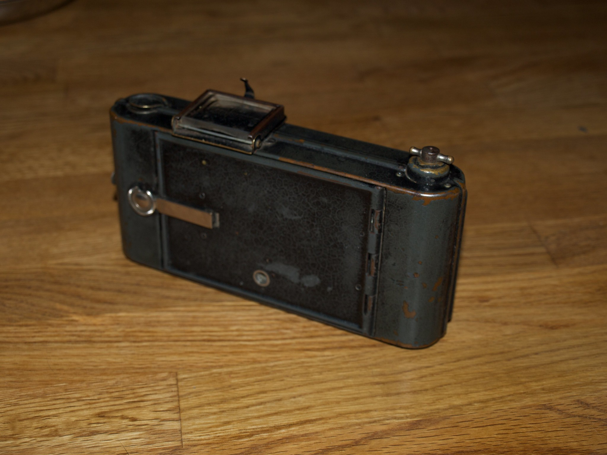
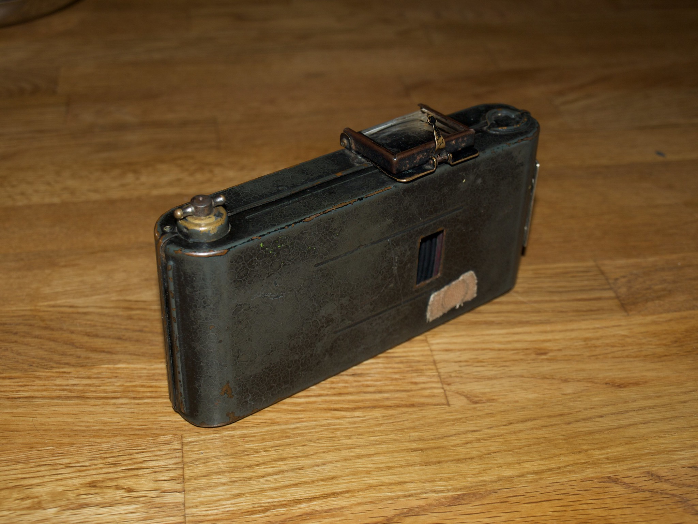

Cleaning the camera
This filth was really ground in. I tried all manner of cloths and cleaning materials. Eventually I had to tentatively rub it down with Silvo silver polishing wadding. That worked wonders, but it still took some 4 hours to get the camera anything like clean. The best indication of the sort of filth I was getting off can be seen by the state of my hands. Despite regular washing to avoid reapplying the dirt to the body they looked like this every couple of minutes or so:
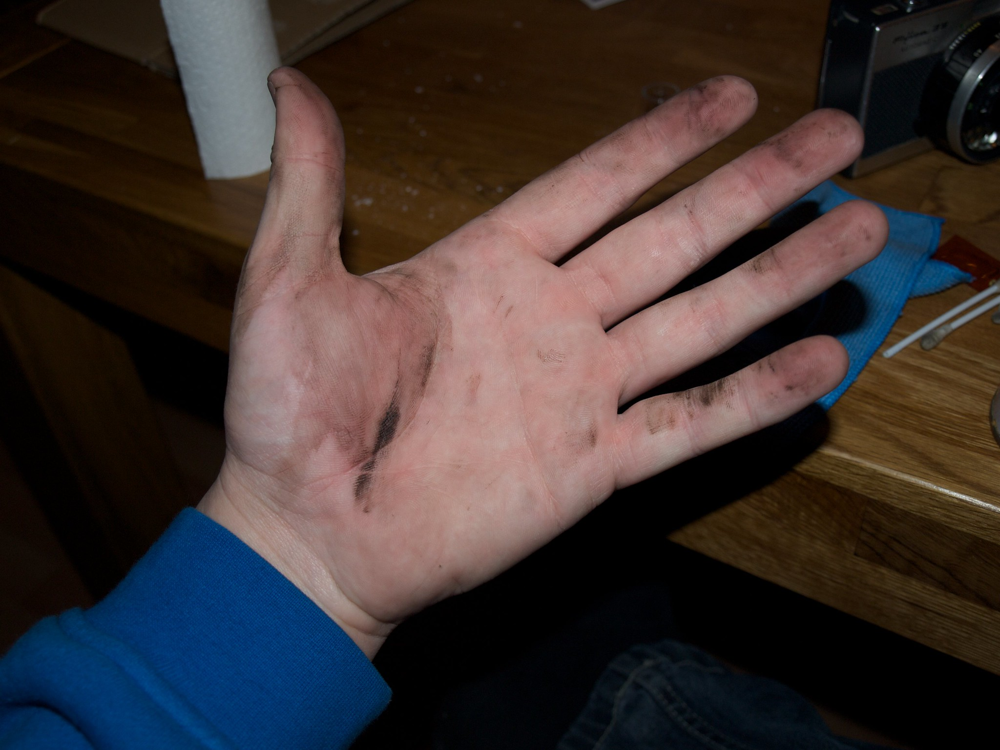
The pay off for all this work is a camera that looks like this:
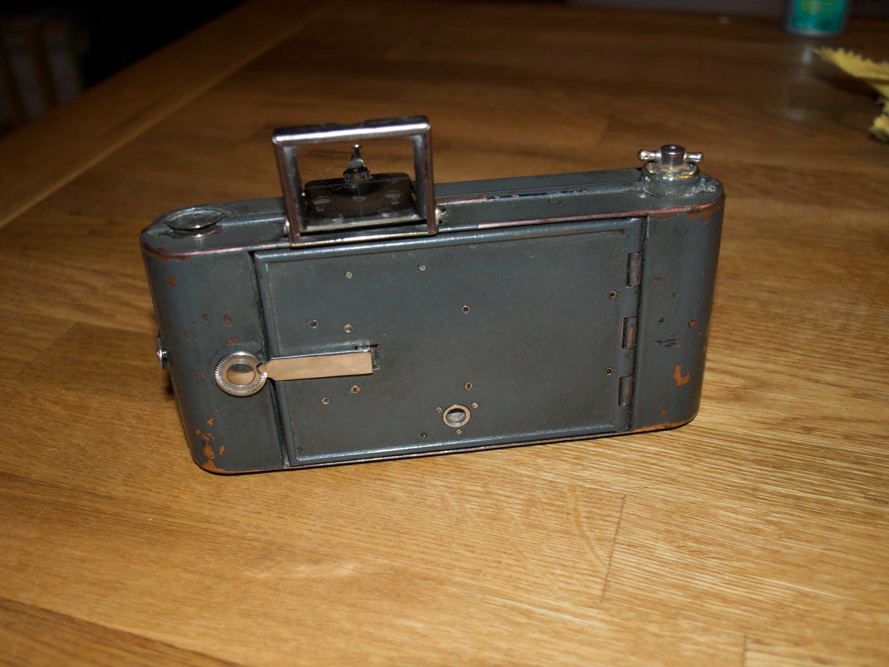
 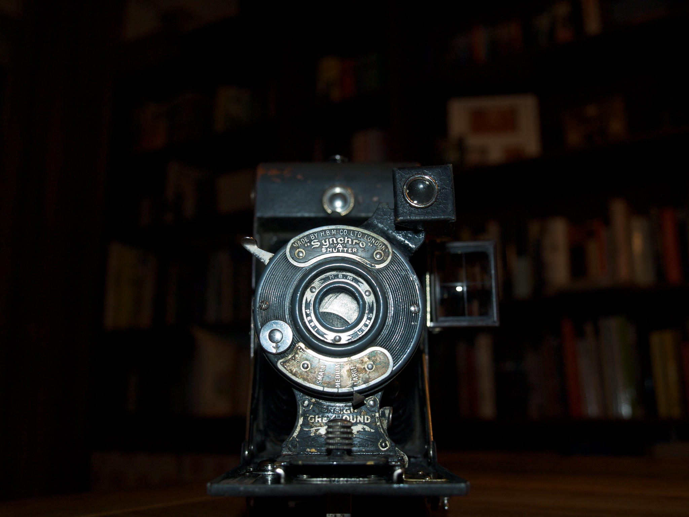
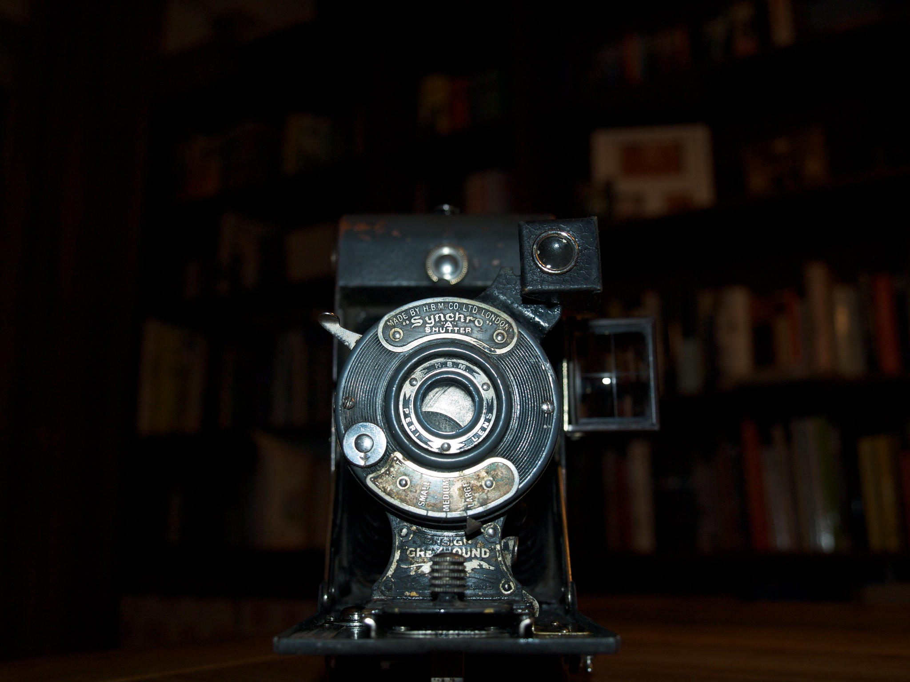
Still far from show condition - but without actively taking steps to restore it this is as good as it’s going to get in terms of the look. Next I turned to the function. I performed a a check of the bellows, miraculously they are in perfect working order, oiling the rails and hinges left me with a faultless folding mechanism which clicks smoothly into both focus positions. Though “9 feet” and “near objects” are far from ideal focussing options!
I cleaned and serviced the lens and shutter and again everything was in working order. There are three aperture settings - Small, Medium and Large - that are achieved by a rotating ring of circular holes, much as in some of the 60’s plastic cameras (i.e. the Lomo Diana). The shutter has three settings - a short exposure (perhaps 1/200th of a second based on results, but it’s really hard to say), a typical “bulb” exposure and press to open, press to close mode. Clearly this camera is geared for the long exposure.
Removing the 6x6 conversion
At some point in it’s life it had been converted from 6x9 to 6x6. Presumably this was done for reasons of economy. This conversion would increase the camera from 8 to 12 shots per roll of 120 film. The means of conversion were rather brutal however, two 1.5cm strips of some kind of coated plywood were glued into either side of the frame window inside the body.
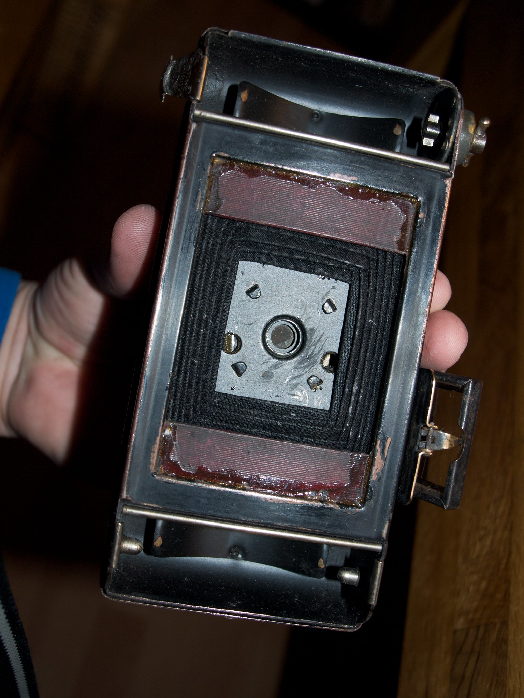
Worse still, in order to show the 6x6 frame numbers on the back of the film instead of the 6x9 ones a new window had been cut out of the brass back of the camera, a small red plastic insert was glued in to act as a new window and the original window had been covered with Elastoplast.
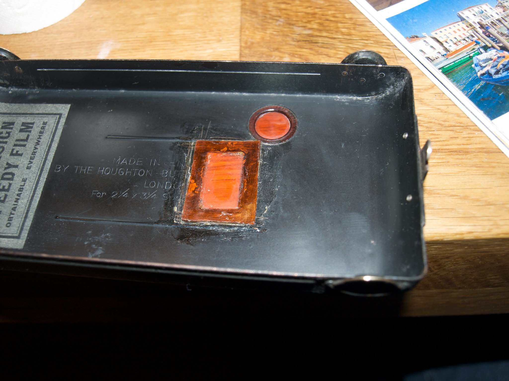
As the damage was already done I had no hesitation in removing the modifications and taking the camera back by to it’s original 6x9 frame size. I cut the improvised frame blinds out with a penknife and removed the Elastoplast and the plastic window. I resealed the cut window with heavy duty electrical tape and ensured it didn’t allow any light through.
Finally I thoroughly cleaned the interior of the camera and tidied up any bare or reflective spots that might effect an image.
Using it!
At this point the camera was in principal ready to use. The next day I loaded it with Kodak T-Max 100 black and white negative 120 roll film and headed into central Munich. Today I unloaded the film, reeled it onto a Jobo spool, put it in a daylight tank and developed it in Ilford LC-29 for seven and a half minutes. Here are the results:
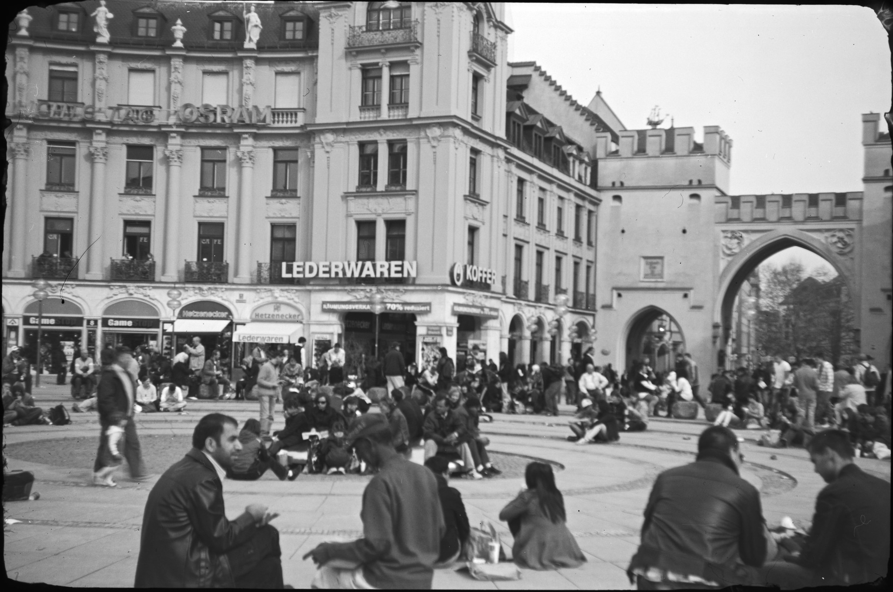 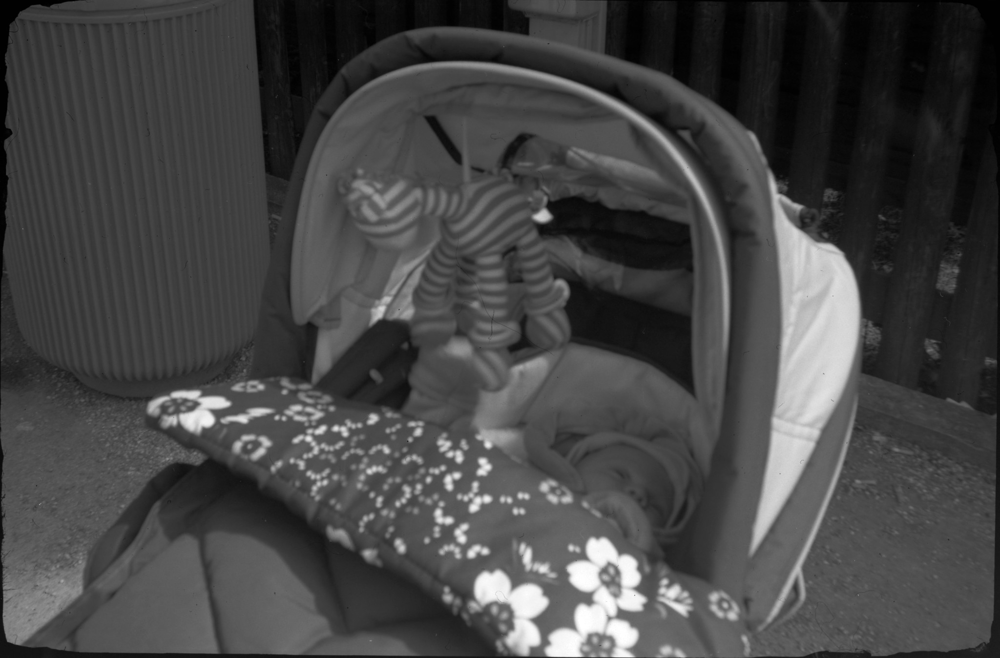 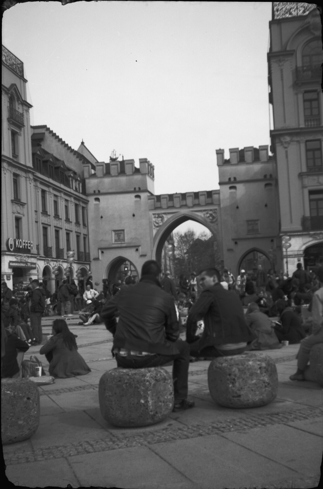 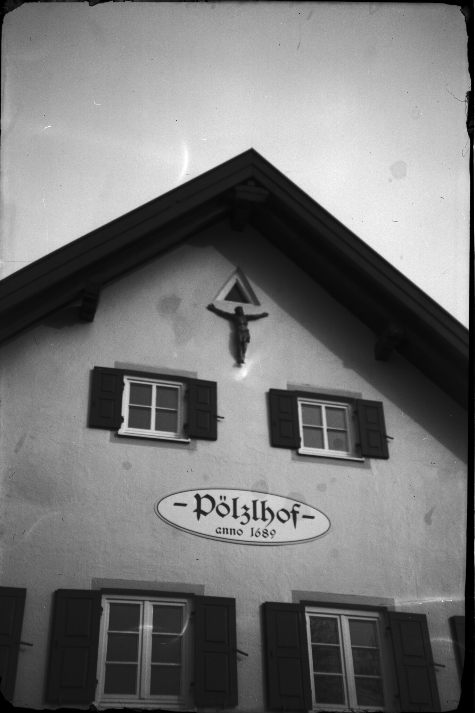
Nothing spectacular. The camera is very hard to hand-hold and the primitive controls are really not up to any really serious work, but still it feel satisfying to have coaxed this old camera back to life, and there is a certain sentimental feel to taking photos with your Granddad’s 80 year old camera.